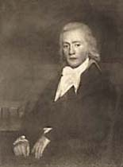
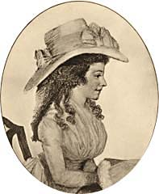
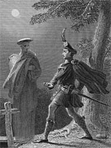
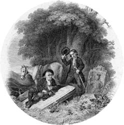
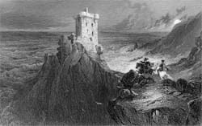
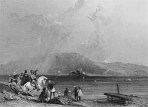
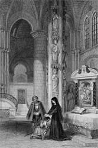

|
|
Home | Corson Collection | Biography | Works | Image Collection | Recent Publications | Portraits | Correspondence | Forthcoming Events | Links | E-Texts | Contact Scott the NovelistEarly Experiments in FictionScott had been an enthusiastic novel-reader since his school years and had acquired not only an exhaustive knowledge of the English novel tradition but extensive familiarity with the classics of French, German, and Spanish fiction (see School and University and Literary Beginnings). According to his own account in the 'General Preface' to the 'Magnum Opus' edition of the Waverley Novels (1829), Scott's first experiments with prose fiction date from the turn of the nineteenth century. Two fragments survive (published as appendices to the 'General Preface'). Thomas the Rhymer was destined to be a 'tale of chivalry' in the style of Horace Walpole's The Castle of Otranto, 'with plenty of Border characters, and supernatural incident'. The Lord of Ennerdale too was strongly influenced by prevailing Gothic models such as Walpole, Anne Radcliffe, and 'Monk' Lewis. Neither work was carried beyond its first chapter. Scott did not, though, abandon the ambition to write prose fiction. According to the General Preface (1829) to the 'Magnum Opus' edition of the Waverley Novels, he began work 'about the year 1805' on a novel entitled 'Waverley, or 'tis Fifty Years Since', inspired by tales heard from Jacobite veterans and by his own travels in the Highlands as an apprentice Writer to the Signet (see Professional Life). Scott was intrigued by the fictional potential of the clash between the ancient, patriarchal customs of the Highlanders and the march of progress in the increasingly industrialized age of the Enlightenment. Having given the opening chapters to read to his friend Will Erskine (portrayed, right), an unfavourable reaction left Scott reluctant to risk the literary reputation newly won by the success of The Lay of the Last Minstrel (see Scott the Poet). The fragment then lay forgotten in a drawer until autumn 1813. Recent critics have queried the chronology of Scott's account, uncovering compelling textual and circumstantial evidence that Scott was actively engaged with the novel over the period 1808-10 and, indeed, may not have begun work on it before that time (see the Waverley page for the relevant arguments). They have also questioned Scott's account (in the General Preface) of the literary influences that led him to resume his experiment with fiction. The debt that Scott acknowledges to Maria Edgeworth (portrayed, left) is unarguably genuine. The success of her novels of Irish manners such as Castle Rackrent and Ennui led Scott to believe that his countrymen might be presented to the English novel-reading public 'in a more favourable light than they had been placed hitherto, and tend to procure sympathy for their virtues and indulgence for their foibles.' Edgeworth would later become a valued correspondent of Scott and acute reader of his novels. While acknowledging Edgeworth's influence, however, Scott downplays that of other practitioners of the 'national tale' or novel of regional manners such as Lady Morgan, Jane Porter, and Elizabeth Hamilton. In so doing and in backdating the genesis of Waverley to 1805, Scott's first novel thus appears to pre-empt rather than respond to a literary mode. A further influence, possibly overstated by Scott, was the editorial work undertaken for John Murray on Joseph Strutt's unfinished romance of fifteenth-century England Queenhoo-Hall (published 1808), to which Scott added two concluding chapters of his own. Scott attributed the commercial failure of Queenhoo-Hall to Strutt's excessively archaic language and desire to vaunt his antiquarian knowledge. He felt that it would be possible to write a historical romance more readily comprehensible to the general reader but feared there was little appetite for tales of medieval chivalry.The enthusiastic public and critical response to the description of Highland landscape and manners in Scott poem The Lady of the Lake (1810) persuaded him that a prose narrative of more recent history, with a Highland setting, might have a better chance of success. WaverleyAccording to Scott's account in the 'General Preface' to the 'Magnum Opus' edition of the Waverley Novels (questioned by some recent critics and biographers), the Waverley manuscript was mislaid during his move to Abbotsford in 1811. One day in autumn 1813, however, Scott claims to have come across the manuscript in a drawer while rummaging for fishing tackle. He reread it, was persuaded that it had potential, and resolved to complete it. He was bolstered in this resolution by the disappointing sales of his recent narrative poem Rokeby and the pressing financial difficulties of John Ballantyne's publishing business, in which Scott was silent half-partner (see Financial Hardship). Consulted once again on the completion of the first volume, Will Erskine reversed his original opinion, and warmly encouraged Scott. The second and third volumes were completed in an extraordinary three-week burst in June 1814, and Waverley (with the subtitle updated to ''tis Sixty Years Since'), published on 7 July, a few weeks before Scott's forty-third birthday. The novel (illustrated, right) was published anonymously and, in order to preserve Scott's incognito, the manuscript had been copied out in John Ballantyne's hand before going to print. Scott's novels would continue to be published anonymously or under pseudonyms until 1827 when Scott admitted to his authorship at a public dinner. Only those closest to Scott were let into the secret of his authorship, though thousands more came to suspect it. There is no clear single reason why Scott wished to remain anonymous, but a number of factors contributed to his decision. Firstly, the novel was not considered a serious genre at the time, especially in comparison with the sort of narrative verse that Scott had hitherto published. Secondly, writing fiction would not have been regarded as a decorous pastime for a Clerk of the Session (see Professional Life). Finally, Scott viewed the publication of Waverley as an experiment upon the public taste and wished to protect his reputation should the book fail. As time went on, though, and the Waverley Novels became ever more popular, Scott's anonymity undoubtedly also appealed to his taste for romance and mystery.
The 'Scottish Novels'Over the next five years, Scott wrote a further eight novels set in seventeenth- or eighteenth-century Scotland. It is substantially upon these works that Scott's critical reputation now rests. Guy Mannering (1815) and The Antiquary (1816), Scott's own favourite amongst his novels, complete, with Waverley, an ideal trilogy illustrating three periods of Scottish history from the 1740s to the 1800s. Each volume brought further commercial success. Critical opinion was broadly favourable though there was the first hint of charges that would be regularly leveled at Scott's future novels: that he repeated his characters under different names, failed to make his Scots dialogue sufficiently comprehensible for an English audience, relied excessively on the supernatural, or was irreverent in matters of religion. For his next publication Scott made a further attempt to mystify the public, adopting the nom de plume of Jedediah Cleishbotham, schoolmaster at the fictional village of Gandercleuch. Cleishbotham purported to be editing the narratives of one Peter Pattieson which in turn were supposed to be based on stories told by the landlord of the local inn. As the volume was to be published by Blackwood rather than Constable, Scott hoped that the public would believe a new writer had appeared to challenge the supremacy of the 'Author of Waverley'. Tales of My Landlord (1816) was originally to consist of four short novels on Scottish regional themes. However, The Tale of Old Mortality, set during the anti-Covenanting campaign of John Graham of Claverhouse, grew to fill three volumes, and of the other stories, only The Black Dwarf was completed and published along with it. The Tales matched the commercial success of the earlier trilogy, and critics concurred with Scott's own assessment that Old Mortality (illustrated, above right) was his best work to date. They equally, however, shared Scott's view that The Black Dwarf, a tale of family rivalry in early eighteenth-century Scotland, retrod old ground.
A Third Series of Tales of My Landlord appeared in 1819. Written when Scott was critically ill, The Bride of Lammermoor (illustrated, left) was a return to the world of the Border ballads. One of the few Scott novels to have a tragic conclusion, its tale of foredoomed love immediately caught the public imagination. It inspired many artists and gave rise to numerous stage and musical adaptations, most famously Donizetti's Lucia di Lammermoor. Its companion-piece A Legend of Montrose, set during the Royalist Earl of Montrose's Highland campaign against the Covenanters in 1644, has remained somewhat in its shadow. Its mercenary anti-hero, Captain Dalgetty, however has since been recognized as one of Scott's finest comic characters. From Ivanhoe to The Talisman
Nonetheless,
Scott did not immediately seek to replicate the success of Ivanhoe with
another chivalric romance. His next two novels returned to a Scottish
setting. The Monastery and
its sequel The Abbot (both
1820) were set in the reign of Mary, Queen of Scots. If the former
disappointed many readers (including Scott himself), the latter,
dealing with Mary's escape from imprisonment, fully restored his
reputation. Its success helped Scott overcome his initial misgivings
about his ability to inhabit the sixteenth-century imaginatively,
and his next novel Kenilworth (1821)
was set in Elizabethan England. Scott, by this stage, was writing
at a feverish rate, and before the end of 1821 had published a
further novel, The Pirate,
set in early seventeenth-century Shetland and Orkney. Excluded
from the relatively limited twentieth-century Scott canon, The
Abbot and The Pirate remained amongst Scott's most popular
works throughout the nineteenth-century, providing source material
for many Victorian artists, and inspiring tourist pilgrimages to
Loch Leven (portrayed, above left) and the Northern Isles. Kenilworth too
was a major European success and, long dismissed as a succession
of historical tableaux, has recently enjoyed a critical revival. Scott maintained his phenomenal rate of production with The Fortunes of Nigel in May 1822 and Peveril of the Peak in January 1823. With these works he returned to the seventeenth century. The former is set shortly after the Union of the Crowns and traces the efforts of a Scottish nobleman to protect his inheritance at the court of King James VI and I. The latter deals with the so-called Popish Plot of 1678. Although Scott retained his popularity with the reading public, critical opinion was by now divided. Increasingly, Scott was charged with over-hasty composition, careless plotting, and the duplication of characters and situations. Reviewers repeatedly insinuated that he was now writing less for fame than fortune.
The critics were relieved to see Scott return to the high Middle Ages with Tales of the Crusaders (1825). Scott here united two novels, The Talisman, set in Palestine during the Third Crusade, and The Betrothed, a tale of border conflicts between Anglo-Norman and Welsh barons. Featuring Saladin and Richard the Lionheart in prominent roles, the former gave rise to further debate on the propriety of mingling historical facts and personages with fiction. As Scott and his publishers had hoped, though, its virtues nonetheless distracted critics and public from the shortcomings of its companion piece. Particularly in Europe, The Talisman remains a highly popular novel, though largely promoted as a work for children. After the Crash
As Scott fought to pay off his debts during the last six years of his life, his fictional production dropped off. His creative energy was primarily expended on the biography of Napoleon (1827-8) and the lucrative Tales of a Grandfather (1828-31) and History of Scotland (1829). He nonetheless published four further volumes of fiction. Chronicles of the Canongate (1827) was credited to a new nom de plume, Mr. Chrystal Croftangry, and contained two short-stories: 'The Highland Widow', and 'The Two Drovers', and a novella, 'The Surgeon's Daughter'. Despite lukewarm reviews, Scott considered the two short stories among his finest work, an opinion shared by many recent critics. The Second Series of Chronicles of the Canongate was composed entirely of the novel The Fair Maid of Perth (1828). Set in late fourteenth-century Scotland, it was Scott's last major commercial and critical success as a writer of fiction. Scott returned to the fifteenth-century dynastic quarrels of Quentin Durward for his next novel Anne of Geierstein (1829) (illustrated, left). To his surprise, it was relatively well received by both public and critics, though some of the latter shared his own opinion that the factual elements of the plot were more interesting than the purely fictional. Finally, in December 1831, ten months before Scott's death, his last two novels Count Robert of Paris and Castle Dangerous were published together as a Fourth Series of Tales of My Landlord. The former was set in Byzantium during the First Crusade, the latter in the Scottish Borders during the Wars of Independence. Although Scott barely considered them 'seaworthy', the public remained faithful. Critical reaction was uneffusive but largely respectful, though subsequent commentators regarded them as the weakest part of Scott's oeuvre. Perhaps, though, Scott's greatest literary commitment in the last years of his life was in revising his fiction for the 'Magnum Opus' edition of the Waverley Novels published from 1829 onwards. In addition, Scott wrote lengthy introductions to each volume and added copious contextual notes. The 'Magnum Opus' remained the standard edition of Scott throughout the Victorian period and its critical status has only recently been challenged by the Edinburgh Edition (see Recent Publications).
Last updated: 23-Jan-2007
|
|||||||||||||||


 Two
further novels appeared in 1823.
Two
further novels appeared in 1823.